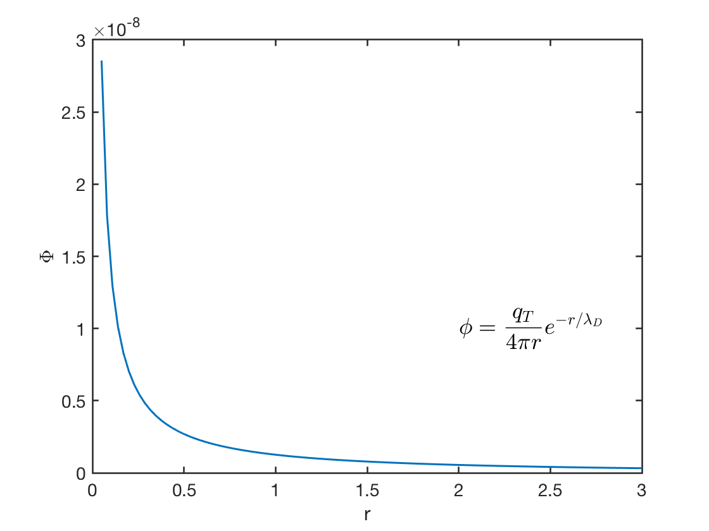

2 Introduction
- What is plasma?
Quasi-neutral ionized gases. The fourth state of matter: solid, liquid, gas, plasma.
- Where is plasma?
- Astrophysics & geophysics
- Dynamo
- Shock
- Reconnection
- Particle acceleration
- Engineering & application
- Controlled fusion
- Power conversion
- Reentry of intercontinental ballistic missiles and spacecrafts
- Plasma jet as a new propulsion for space vehicles
- Global warming
- Astrophysics & geophysics
- Methodologies applied in plasma physics
- Kinetic theory
- Microscopic point of view
- Positive, negative & neutral particles
- EM force, collisions
- Ordinary gas .vs. Plasma
- binary collision
- free between collisions
- Kinetic theory
\[ \begin{aligned} &nf(\mathbf{x}+\mathrm{d}\mathbf{x},\mathbf{p}+\mathrm{d}\mathbf{p},t+\mathrm{d}t)\mathrm{d}\mathbf{x}\mathrm{d}\mathbf{p}-nf(\mathbf{x},\mathbf{p},t)\mathrm{d}\mathbf{x}\mathrm{d}\mathbf{p} \\ =&\frac{\partial (nf(\mathbf{x},\mathbf{p},t))}{\partial t}\Big|_{\text{collision}}\mathrm{d}\mathbf{x}\mathrm{d}\mathbf{p}\mathrm{d}t \nonumber \\ =&\frac{\partial (nf)}{\partial t}+\frac{\partial nf}{\partial \mathbf{x}}\cdot\frac{\mathbf{p}}{m}+\frac{nf}{\partial \mathbf{p}}\cdot\mathbf{F} \end{aligned} \]
This is also called the Fokker-Planck term.
- Theory of continuum
- Macroscopic point of view, bulk motion
- Fundamental equations from conservation laws
- Electro-Magneto-Hydro-Dynamics (EMHD)
Definition: Plasma = ionized gas
In plasma physics we usually use energy units “eV” instead of temperature. Given Boltzmann constant \(k_B=1.38\times10^{-23}J/K\),
\[ 1\text{eV}=(11600\text{K})\times k_B=1.602\times 10^{-19}\text{J} ([V]=[J]/[C]) \]
There are generally two kinds of plasma:
- High temperature(\(>1\text{keV}\)): fusion plasma
- Low temperature(\(\sim 1\text{eV}-100\text{eV}\)): plasma processing, space propulsion
At the beginning, it is important to get the idea of size. Starting from two basic length scales:
- \(a_0\equiv \text{atomic scale }\)(\(\sim 10^{-10}\text{m}\))
- n = number density (\(\sim 1/\text{cm}^3\) to \(10^{20}/\text{cm}^3\))
Physically, \(n\) represents the number of particles in a unit volume, from which we know \(n^{-1/3}\) has unit of length. It means a typical length for a single particle. Ionized state implies that \(k_B T\gg E_i=\) ionization potential energy\(\sim \frac{e^2}{4\pi\epsilon_0 a_0}\approx 14eV\)).
Gaseous state implies that \(n^{-1/3}\gg a_0\).
\[ \begin{aligned} n^{-1/3}\gg a_0\sim\frac{e^2}{4\pi\epsilon_0 E_i}\gg \frac{e^2}{4\pi\epsilon_0(k_B T)} \\ 4\pi n^{-1/3} n \Big( \frac{\epsilon_0 k_B T}{e^2 n} \Big) \gg 1 \nonumber \end{aligned} \]
\(n^{2/3}\) has unit of \(\text{length}^{-2}\), indicating that the other term should be in the unit of \(\text{length}^{2}\). This is derived using dimensional analysis, which gives
\[ \lambda_{D}=\sqrt{\frac{\epsilon_0 k_B T}{e^2 n}}\equiv \textrm{Debye length}=740(\text{cm})\sqrt{\frac{T(\text{eV})}{n(\text{cm}^{-3})}} \]
\[ \begin{split} (4\pi)^{3/2}n{\lambda_{D}}^3 &\gg 1 \\ n{\lambda_D}^3 &\gg 1 \Rightarrow \text{Large number of particles in a sphere} \end{split} \]
This is necessarily satisfied for plasma under previous definitions.
Indication from the definition of plasma:
- There are large number of particles in a Debye sphere.
\(\underline{\text{Ex}.1}\) laboratory plasma \(10^{8}\text{cm}^{-3}\rightarrow 10^{20}\text{cm}^{-3}\). Tokamak \(n=10^{14}\text{cm}^{-3}\), \(k_B T=10\text{keV}=10^4\text{eV}\), \(n^{-1/3}=2.15\times10^{-5}\text{cm}\), \(\lambda_D=7.4\times10^{-3}\text{cm} \gg n^{-1/3}\), \(n{\lambda_{D}}^3\gg 1\).
\(L\gg\lambda_{D}\gg n^{-1/3}\), where \(L\) is the scale of the physical system (\(\sim 1\text{mm}\text{ to }10\text{m}\)).
Put it in another way, a criterion for an ionized gas to be a plasma is that it be dense enough that \(\lambda_D\) is much smaller than \(L\).
\(\underline{\text{Ex}.2}\) Interstellar plasma \(n=1 \text{cm}^{-3}, T=1eV\), \(\lambda_D=740\text{cm}\sqrt{\frac{1}{1}}=740\text{cm} \gg n^{-1/3}\), \(n{\lambda_D}^3\gg1\).
- Particle kinetic energy \(\gg\) average Coulombic interaction energy.
\[ \begin{split} KE&\sim k_B T \\ PE&\sim \frac{e^2}{4\pi\epsilon_0(n^{-1/3})} \end{split} \]
From the definition we can easily know that
\[ k_B T\gg \frac{e^2}{4\pi\epsilon_0 n^{-1/3}}\Rightarrow KE\gg PE \]
This implies that particles are hard to be deflected by their neighbours.
Particles are scattered mostly by accumulative, multiple small angle collisions rather than by large angle collisions. This naturally follows the above energy discussion, and will be explained in further detail later.
Collective interactions (the basics of all instabilities) dominate over Coulombic interactions between individual particles. This has an analogy to economy: one has nearly no effect on the whole, but the whole has huge effect on individuals. EM fields stand as a bridge between particles.
2.1 Occurrence of Plasma in Nature
It is now believed that the universe is made of 69% dark energy, 27% dark matter, and 1% normal matter. All that we can see in the sky is the part of normal matter that is in the plasma state, emitting radiation. Plasma in physics, not to be confused with blood plasma, is an “ionized” gas in which at least one of the electrons in an atom has been stripped free, leaving a positively charged nucleus, called an ion. Sometimes plasma is called the “fourth state of matter”. When a solid is heated, it becomes a liquid. Heating a liquid turns it into a gas. Upon further heating, the gas is ionized into a plasma. Since a plasma is made of ions and electrons, which are charged, electric fields are rampant everywhere, and particles “collide” not just when they bump into one another, but even at a distance where they can feel their electric fields. Hydrodynamics, which describes the flow of water through pipes, say, or the flow around boats in yacht races, or the behavior of airplane wings, is already a complicated subject. Adding the electric fields of a plasma greatly expands the range of possible motions, especially in the presence of magnetic fields.
Plasma usually exists only in a vacuum. Otherwise, air will cool the plasma so that the ions and electrons will recombine into normal neutral atoms. In the laboratory, we need to pump the air out of a vacuum chamber. In the vacuum of space, however, much of the gas is in the plasma state, and we can see it. Stellar interiors and atmospheres, gaseous nebulas, and entire galaxies can be seen because they are in the plasma state. On earth, however, our atmosphere limits our experience with plasmas to a few examples: the flash of a lightning bolt, the soft glow of the Aurora Borealis, the light of a fluorescent tube, or the pixels of a plasma TV. We live in a small part of the universe where plasmas do not occur naturally; otherwise, we would not be alive.
The reason for this can be seen from the Saha equation, which tells us the amount of ionization to be expected in a gas in thermal equilibrium:
\[ \frac{n_i}{n_n}\approx 2.4\times 10^{21}\frac{T^{3/2}}{n_i} e^{-\frac{U_i}{k_B T}} \tag{2.1}\]
Here \(n_i\) and \(n_n\) are, respectively, the density (number per \(\text{m}^3\)) of ionized atoms and of neutral atoms, T is the gas temperature in Kelvin, \(k_B\) is Boltzmann’s constant, and \(U_i\) is the ionization energy of the gas — that is, the number of joules required to remove the outermost electron from an atom. For ordinary air at room temperature, we may take \(n_n\approx 3\times 10^{25}\,\text{m}^{-3}\), \(T\approx 300\, \text{K}\), and \(U_i = 14.5\,\text{eV}\) (for nitrogen), where \(1\,\text{eV} = 1.6\times 10^{19}\,\text{J}\). The fractional ionization \(n_i/(n_n + n_i) \approx n_i/n_n\) is ridiculously low:
\[ \frac{n_i}{n_n}\approx 10^{-122} \]
As the temperature is raised, the degree of ionization remains low until \(U_i\) is only a few times \(k_B T\). Then \(n_i/n_e\) rises abruptly, and the gas is in a plasma state. Further increase in temperature makes \(n_n\) less than \(n_i\), and the plasma eventually becomes fully ionized. This is the reason plasmas exist in astronomical bodies with temperatures of millions of degrees, but not on the earth. Life could not easily coexist with a plasma — at least, plasma of the type we are talking about. The natural occurrence of plasmas at high temperatures is the reason for the designation “the fourth state of matter”.
Although we do not intend to emphasize the Saha equation, we should point out its physical meaning. Atoms in a gas have a spread of thermal energies, and an atom is ionized when, by chance, it suffers a collision of high enough energy to knock out an electron. In a cold gas, such energetic collisions occur infrequently, since an atom must be accelerated to much higher than the average energy by a series of “favorable” collisions. The exponential factor in Equation 2.1 expresses the fact that the number of fast atoms falls exponentially with \(U_i/k_BT\). Once an atom is ionized, it remains charged until it meets an electron; it then very likely recombines with the electron to become neutral again. The recombination rate clearly depends on the density of electrons, which we can take as equal to \(n_i\). ni. The equilibrium ion fraction, therefore, should decrease with \(n_i\); and this is the reason for the factor \(ni^{-1}\) on the right-hand side of Equation 2.1. The plasma in the interstellar medium owes its existence to the low value of \(n_i\) (about 1 per \(\text{cm}^3\)), and hence the low recombination rate.
2.2 Definition of Plasma
Any ionized gas cannot be called a plasma, of course; there is always some small degree of ionization in any gas. A useful definition is as follows:
A plasma is a quasineutral gas of charged and neutral particles which exhibits collective behavior.
We must now define “quasineutral” and “collective behavior”. The meaning of quasineutrality will be made clear in Sect. 1.4 LINK?. What is meant by “collective behavior” is as follows.
Consider the forces acting on a molecule of, say, ordinary air. Since the molecule is neutral, there is no net electromagnetic force on it, and the force of gravity is negligible. The molecule moves undisturbed until it makes a collision with another molecule, and these collisions control the particle’s motion. A macroscopic force applied to a neutral gas, such as from a loudspeaker generating sound waves, is transmitted to the individual atoms by collisions. The situation is totally different in a plasma, which has charged particles. As these charges move around, they can generate local concentrations of positive or negative charge, which give rise to electric fields. Motion of charges also generates currents, and hence magnetic fields. These fields affect the motion of other charged particles far away.
Let us consider the effect on each other of two slightly charged regions of plasma separated by a distance \(r\). ADD FIGURE! The Coulomb force between A and B diminishes as \(1/r^2\). However, for a given solid angle (that is, \(\Delta r/r =\) constant), the volume of plasma in B that can affect A increases as \(r^3\). Therefore, elements of plasma exert a force on one another even at large distances. It is this long-ranged Coulomb force that gives the plasma a large repertoire of possible motions and enriches the field of study known as plasma physics. In fact, the most interesting results concern so-called “collisionless” plasmas, in which the long-range electromagnetic forces are so much larger than the forces due to ordinary local collisions that the latter can be neglected altogether. By “collective behavior” we mean motions that depend not only on local conditions but on the state of the plasma in remote regions as well.
The word “plasma” seems to be a misnomer. It comes from the Greek πλάσμα, ατoς, τo, which means something molded or fabricated. Because of collective behavior, a plasma does not tend to conform to external influences; rather, it often behaves as if it had a mind of its own.
2.3 Concept of Temperature
Before proceeding further, it is important to review and extend our physical notions of “temperature”. A gas in thermal equilibrium has particles of all velocities, and the most probable distribution of these velocities is known as the Maxwellian distribution. For simplicity, consider a gas in which the particles can move only in one dimension. (This is not entirely frivolous; a strong magnetic field, for instance, can constrain electrons to move only along the field lines.) The one-dimensional Maxwellian distribution is given by
\[ f(v) = A \exp\left( -\frac{1}{2}mv^2/k_B T \right) \tag{2.2}\]
where \(f\mathrm{d}u\) is the number of particles per \(\text{m}^3\) with velocity between \(u\) and \(u+\mathrm{d}u\), \(\frac{1}{2}mu^2\) is the kinetic energy, and \(k_B\) is Boltzmann’s constant. The density \(n\), or number of particles per \(\text{m}^3\), is given by
\[ n = \int_{-\infty}^\infty f(v)\mathrm{d}v \]
The constant \(A\) is related to the density \(n\) by
\[ A = n\left( \frac{m}{2\pi k_B T} \right)^{1/2} \]
The width of the distribution is characterized by the constant \(T\), which we call the temperature. To see the exact meaning of \(T\), we can compute the average kinetic energy of particles in this distribution:
\[ E_\text{av} = \frac{\int_{-\infty}^\infty \frac{1}{2}mv^2f(v)\mathrm{d}v}{\int_{-\infty}^\infty f(v)\mathrm{d}v} \tag{2.3}\]
Defining \(y=v/v_\text{th}\) and
\[ v_\text{th} = \left( 2k_B T/m \right)^{1/2} \tag{2.4}\]
we can write Equation 2.2 as
\[ f(v) = A \exp(-v^2/v_\text{th}^2) \]
and Equation 2.3 as
\[ E_\text{av} = \frac{\frac{1}{2}mA v_\text{th}^3 \int_{-\infty}^\infty [\exp(-y^2)]y^2\mathrm{d}y}{A v_\text{th}\int_{-\infty}^\infty [\exp(-y^2)]\mathrm{d}y} \]
The integral in the numerator is integrable by parts:
\[ \begin{aligned} \int_{-\infty}^\infty y\cdot[\exp(-y^2)]y\mathrm{d}y &= \left[ -\frac{1}{2}[\exp(-y^2)]y \right]_{-\infty}^\infty -\int_{-\infty}^\infty -\frac{1}{2}[\exp(-y^2)]\mathrm{d}y \\ &= \frac{1}{2}\int_{-\infty}^\infty [\exp(-y^2)]\mathrm{d}y \end{aligned} \]
Canceling the integrals, we have
\[ E_\text{av} = \frac{\frac{1}{2}mA v_\text{th}^3\frac{1}{2}}{A v_\text{th}} = \frac{1}{4}m v_\text{th}^2 = \frac{1}{2}k_B T \]
Thus the average kinetic energy is \(\frac{1}{2}k_B T\).
It is easy to extend this result to three dimensions. Maxwell’s distribution is then
\[ f(v_x, v_y, v_z) = A_3 \exp\left[ -\frac{1}{2}m(v_x^2 + v_y^2 + v_z^2)/k_B T \right] \]
where
\[ A_3 = n\left( \frac{m}{2\pi k_B T} \right)^{3/2} \]
Because a Maxwellian distribution is isotropic (i.e. the form is symmetric in \(v_x,v_y,\) and \(v_z\)), we can separate each dimension. The average kinetic energy is then 3 times the single dimension result
\[ E_\text{av} = \frac{3}{2}k_B T \]
The general result is that \(E_\text{av}\) equals \(\frac{1}{2}k_B T\) per degree of freedom.
Since \(T\) and \(E_\text{av}\) are so closely related, it is customary in plasma physics to give temperatures in units of energy. To avoid confusion on the number of dimensions involved, it is not \(E_\text{av}\) but the energy corresponding to \(k_B T\) that is used to denote the temperature. For \(k_B T = 1\,\text{eV}=1.6\times 10^{-19}\,\text{J}\), we have
\[ T = \frac{q}{k_B} = 11600 \]
Thus the conversion factor is
\[ 1\,\text{eV} = 11600\,\text{K} \]
By a 2-eV plasma we mean that \(k_B T=2\,\text{eV}\), or \(E_\text{av}=3\,\text{eV}\) in three dimensions.
It is interesting that a plasma can have several temperatures at the same time. It often happens that the ions and the electrons have separate Maxwellian distributions with different temperatures \(T_i\) and \(T_e\). This can come about because the collision rate among ions or among electrons themselves is larger than the rate of collisions between an ion and an electron. Then each species can be in its own thermal equilibrium, but the plasma may not last long enough for the two temperatures to equalize. When there is a magnetic field \(\mathbf{B}\), even a single species, say ions, can have two temperatures. This is because the forces acting on an ion along \(\mathbf{B}\) are different from those acting perpendicular to \(\mathbf{B}\) (due to the Lorentz force). The components of velocity perpendicular to \(\mathbf{B}\) and parallel to \(\mathbf{B}\) may then belong to different Maxwellian distributions with temperatures \(T_\perp\) and \(T_\parallel\).
Before leaving our review of the notion of temperature, we should dispel the popular misconception that high temperature necessarily means a lot of heat. People are usually amazed to learn that the electron temperature inside a fluorescent light bulb is about \(20000\, \text{K}\). “My, it doesn’t feel that hot!” Of course, the heat capacity must also be taken into account. The density of electrons inside a fluorescent tube is much less than that of a gas at atmospheric pressure, and the total amount of heat transferred to the wall by electrons striking it at their thermal velocities is not that great. For example, the temperature of a cigarette ash is high enough to cause a burn, but the total amount of heat involved is not. Many laboratory plasmas have temperatures of the order of \(1,000,000\,\text{K}\) (\(100\,\text{eV}\)), but at densities of only \(10^{18}-10^{19}\) per \(\text{m}^3\), the heating of the walls is not a serious consideration.
2.4 Debye Shielding
(Problem 4 on P27 (Bellan 2008))
A fundamental characteristic of the behavior of plasma is its ability to shield out electric potentials that are applied to it. Suppose we tried to put an electric field inside a plasma by inserting two charged balls connected to a battery (Fig. 1.3 ADD IT!). The balls would attract particles of the opposite charge, and almost immediately a cloud of ions would surround the negative ball and a cloud of electrons would surround the positive ball. (We assume that a layer of dielectric keeps the plasma from actually recombining on the surface, or that the battery is large enough to maintain the potential in spite of this.) If the plasma were cold and there were no thermal motions, there would be just as many charges in the cloud as in the ball, the shielding would be perfect, and no electric field would be present in the body of the plasma outside of the clouds. On the other hand, if the temperature is finite, those particles that are at the edge of the cloud, where the electric field is weak, have enough thermal energy to escape from the electrostatic potential well. The “edge” of the cloud then occurs at the radius where the potential energy is approximately equal to the thermal energy \(k_BT\) of the particles, and the shielding is not complete. Potentials of the order of \(k_BT/e\) can leak into the plasma and cause finite electric fields to exist there.
Let us compute the approximate thickness of such a charge cloud. Let us put a point charge \(q_T\) into a quasi-neutral gas of charged particles. The gas is in local thermodynamic equilibrium (LTE) with ion and electron temperatures \(T_e\) and \(T_i\) (They are not necessarily the same, and in fact, quite different in nature.). (ADD FIGURE!) We wish to compute \(\phi(x)\). For simplicity, we assume that the ion-electron mass ratio \(M/m\) is infinite, so that the ions do not move but form a uniform background of positive charge. To be more precise, we can say that \(M/m\) is large enough that the inertia of the ions prevents them from moving significantly on the time scale of the experiment.
Maxwell distribution:
\[ f(\mathbf{v})=n_0\Big( \frac{m}{2\pi kT}\Big)^{3/2}\exp\Big( -\frac{mv^2}{2kT}\Big) \]
In the presence of a potential energy \(q\phi\)m the distribution function follows the Boltzmann distribution:
\[ f(\mathbf{x},\mathbf{v})=n_0\Big( \frac{m}{2\pi kT}\Big)^{3/2}\exp\Big( -\frac{\frac{1}{2}mv^2+q\phi(\mathbf{x})}{kT}\Big) \]
It would not be worthwhile to prove this here. What this equation says is intuitively obvious: There are fewer particles at places where the potential energy is large, since not all particles have enough energy to get there.
Note that the concept of temperature is valid in LTE. From the Boltzmann equation,
\[ \begin{aligned} \frac{\mathrm{d}f}{\mathrm{d}t}=\frac{\partial f}{\partial t}+\nabla_x\cdot(f\mathbf{v})+\nabla_v\cdot(f\mathbf{a})=0 \\ \Rightarrow \frac{\partial f}{\partial t}+\mathbf{v}\cdot\nabla_x f+\frac{\mathbf{F}}{m}\cdot\nabla_v f=0 \end{aligned} \]
If we neglect the time derivatives, we obtain
\[ (\mathbf{v}_j\cdot\nabla)f(\mathbf{r},\mathbf{v}_j)+\big[-\frac{1}{m_j}\nabla(q_j\phi)\cdot\nabla_v\big]f(\mathbf{r},\mathbf{v}_j)=0 \tag{2.5}\]
The LTE distribution is in a Maxwellian shape,
\[ f(\mathbf{r},\mathbf{v}_j)=n_j(\mathbf{r})\Big( \frac{m}{2\pi k_BT}\Big)^{3/2}\exp\Big( -\frac{mv^2}{2k_BT}\Big) \]
Substitute into Equation 2.5, we have
\[ \begin{aligned} (\mathbf{v}_j\cdot\nabla)n_j +\frac{\mathbf{v}_j\cdot\nabla(q\phi)}{k_BT_j}n_j=0 \\ \Rightarrow n_j(\mathbf{r}) = n_{j0} \exp\Big[ -\frac{q_j\phi_j(\mathbf{r})}{k_BT_j} \Big] \end{aligned} \]
Then we get the Boltzmann distribution of each species with a separate temperature for each.
Consider a uniform plasma with \(n_i=n_{i0}e^{-e\phi/k_B T_i}\), \(n_e=n_{e0}e^{e\phi/k_BT_e}\), and with the quasi-neutral assumption, \(n_{e0}=n_{i0}=n_0\). Introduce a point charge \(q_T\) in the initially neutralized plasma. Poisson equation gives
\[ \nabla^2 \phi=-\frac{\rho}{\epsilon_0}=-\frac{1}{\epsilon_0}\Big[ e(n_e-n_i) +q_T \delta(\mathbf{r})\Big] \]
Due to symmetry, \(\phi=\phi(r)\). When the temperature is high, \(q\phi(r)\ll kT\), the exponent is small and we can expand in a Taylor series and leave only the first order term. In spherical coordinates,
\[ \begin{aligned} \nabla^2\phi=\frac{1}{r^2}\frac{\partial}{\partial r}\Big( r^2\frac{\partial \phi}{\partial r} \Big)& \nonumber \\ \frac{1}{r^2}\frac{\partial}{\partial r}\Big( r^2\frac{\partial \phi}{\partial r} \Big)+\frac{e}{\epsilon_0}\Big( \underbrace{ n_{e0}e^{e\phi/k_BT_e} - n_{i0}e^{-e\phi/k_B T_i} }_{\approx n_0\big[ e\phi/k_BT_e +e\phi/k_BT_i \big]}\Big)&= -\frac{q_T}{\epsilon_0}\delta(\mathbf{r}) \\ \frac{1}{r^2}\frac{\partial}{\partial r}\Big( r^2\frac{\partial \phi}{\partial r} \Big) -\underbrace{\frac{e^2n_0}{\epsilon_0}\Big( \frac{1}{k_B T_e}+\frac{1}{k_BT_i}\Big) }_{ \frac{1}{{\lambda_D}^2}\equiv \frac{1}{{\lambda_{Di}}^2}+\frac{1}{{\lambda_{De}}^2}}\phi&=-\frac{q_T}{\epsilon_0}\delta(\mathbf{r}) \\ \frac{1}{r^2}\frac{\partial}{\partial r}\Big( r^2\frac{\partial \phi}{\partial r} \Big) -\frac{1}{{\lambda_D}^2}\phi&=-\frac{q_T}{\epsilon_0}\delta(\mathbf{r}) \end{aligned} \]
where
\[ \lambda_D=\sqrt{\frac{\epsilon_0 k_BT^\ast}{n_0e^2}} \tag{2.6}\]
is the Debye length, \(T^\ast=\Big( \frac{1}{T_e}+\frac{1}{T_i} \Big)^{-1}\). The Debye length, is a measure of the shielding distance or thickness of the sheath. Note that larger density indicates better shielding effects, as one would expect, since each layer of plasma contains more electrons. Furthermore, \(\lambda_D\) increases with increasing \(k_B T^\ast\). Without thermal agitation, the charge cloud would collapse to an infinitely thin layer. Finally, most commonly it is the electron temperature (\(T^\ast\approx T_e\)) which is used in the definition of \(\lambda_D\) because the electrons, being more mobile than the ions, generally do the shielding by moving so as to create a surplus or deficit of negative charge. Only in special situations is this not true.
For \(r>0\) (away from the charge),
\[ \frac{1}{r^2}\frac{\partial}{\partial r}\Big( r^2\frac{\partial \phi}{\partial r} \Big) -\frac{1}{{\lambda_D}^2}\phi=0 \]
Let \(\phi(r)=\frac{F(r)}{r}\), we have
\[ \begin{aligned} \frac{\mathrm{d}^2F}{\mathrm{d}r^2}-\frac{F}{{\lambda_D}^2}&=0 \\ \Rightarrow F&=Ae^{-r/\lambda_D}+\cancel{Be^{r/\lambda_D}} (r>0) \nonumber \\ &=Ae^{-r/\lambda_D} \end{aligned} \]
Anticipate when \(r\rightarrow 0\), \(\phi(r)\rightarrow \frac{q_T}{4\pi\epsilon_0 r}\approx \frac{A}{r}\). So
\[ \phi(r)=\frac{q_t}{4\pi\epsilon_0r}e^{-r/\lambda_D} \]

The electric potential drops very quickly (Figure 2.1). In other words, if you insert a charge into a neutral plasma, its potential will only effect within a small range. Recall the Gauss`s law,
\[ \oint\mathbf{E}\cdot \mathrm{d}\mathbf{A}=\frac{Q_T}{\epsilon_0}\rightarrow\textrm{ as }R\rightarrow \infty, \textrm{ E goes to zero.} \]
The following are useful forms of Equation 2.6:
\[ \begin{aligned} \lambda_D &= 69 (T_e/n)^{1/2}\,\text{m},\quad T_e \text{ in K} \\ \lambda_D &= 7430 (k_B T_e/n)^{1/2}\,\text{m},\quad k_BT_e \text{ in eV} \end{aligned} \]
We are now in a position to define “quasineutrality.” If the dimensions \(L\) of a system are much larger than \(\lambda_D\), then whenever local concentrations of charge arise or external potentials are introduced into the system, these are shielded out in a distance short compared with \(L\), leaving the bulk of the plasma free of large electric potentials or fields. Outside of the sheath on the wall or on an obstacle, \(\nabla^2\phi\) is very small, and \(n_i\) is equal to \(n_e\). It takes only a small charge imbalance to give rise to potentials of the order of \(k_BT/e\). The plasma is “quasineutral”; that is, neutral enough so that one can take \(n_i\simeq n_e\simeq n\), where \(n\) is a common density called the plasma density, but not so neutral that all the interesting electromagnetic forces vanish. Plasma may be considered neutral over a length scale larger than Debye length.
Additional comments:
- Plasma acts like dielectron.
- There is a plasma sheath near to where materials contact, inside which charge neutrality is violated. This will be discussed in Section 13.1.
2.5 Criteria for Plasmas
We have given two conditions that an ionized gas must satisfy to be called a plasma. A third condition has to do with collisions. The weakly ionized gas in an airplane’s jet exhaust, for example, does not qualify as a plasma because the charged particles collide so frequently with neutral atoms that their motion is controlled by ordinary hydrodynamic forces rather than by electromagnetic forces. If \(\omega\) is the frequency of typical plasma oscillations and \(\tau\) is the mean time between collisions with neutral atoms, we require \(\omega \tau > 1\) for the gas to behave like a plasma rather than a neutral gas.
- \(\lambda_D \ll L\)
- \(N_D \gg 1\)
- \(\omega\tau > 1\)
Often in lectures people think the condition 1 and 2 are equivalent; they are NOT exactly. The argument would be that condition 1 is valid when the distribution is Maxwellian, which happens to be the equilibrium distribution for large number of particles; condition 2 is the statistical priori for that to be valid.
2.6 Plasma Frequency
Besides the length scale, we are also interested in time scale. The plasma frequency,
\[ \omega_p = \sqrt{\frac{n\,e^2}{\epsilon_0\,m}} \]
is the most fundamental time-scale in plasma physics. Clearly, there is a different plasma frequency for each species. However, the relatively fast electron frequency is, by far, the most important, and references to “the plasma frequency” in most textbooks invariably mean the electron plasma frequency.
\(\omega_p\) corresponds to the typical electrostatic oscillation frequency of a given species in response to a small charge separation. For instance, consider a one-dimensional situation in which a slab consisting entirely of one charge species is displaced from its quasi-neutral position by an infinitesimal distance \(\delta x\). The resulting charge density which develops on the leading face of the slab is \(\sigma=e\,n\,\delta x\). An equal and opposite charge density develops on the opposite face. The \(x\)-directed electric field generated inside the slab is of magnitude \(E_x= -\sigma/\epsilon_0 =- e\,n\,\delta x/\epsilon_0\). Thus, Newton’s law applied to an individual particle inside the slab yields
\[ m\,\frac{\mathrm{d}^2 \delta x}{\mathrm{d}t^2} = e\,E_x = -m\,\omega_p^{~2}\,\delta x \]
giving \(\delta x = \delta x_0\,\cos\omega_p t\).
Plasma frequency is closely associated with plasma oscillation and waves. A more thorough derivation is given in Section 7.1. Note that plasma oscillations will only be observed if the plasma system is studied over time periods \(\tau\) longer than the plasma period \(\tau_p\equiv 1/\omega_p\), and if external actions change the system at a rate no faster than \(\omega_p\). In the opposite case, one is clearly studying something other than plasma physics (e.g., nuclear reactions), and the system cannot not usefully be considered to be a plasma. Likewise, observations over length-scales \(L\) shorter than the distance \(v_t\,\tau_p\) traveled by a typical plasma particle during a plasma period will also not detect plasma behaviour. In this case, particles will exit the system before completing a plasma oscillation. This distance, which is the spatial equivalent to \(\tau_p\), is called the Debye length, and takes the form
\[ \lambda_D \equiv \sqrt{T/m}\,\,\omega_p^{-1}. \]
Note that
\[ \lambda_D = \sqrt{\frac{\epsilon_0\,T}{n\,e^2}} \]
is independent of mass, and therefore generally comparable for different species. Clearly, our idealized system can only usefully be considered to be a plasma provided that
\[ \frac{\lambda_D}{L} \ll 1 \tag{2.7}\]
and
\[ \frac{\tau_p}{\tau}\ll 1 \]
Here, \(\tau\) and \(L\) represent the typical time-scale and length-scale of the process under investigation. It should be noted that, despite the conventional requirement Equation 2.7, plasma physics is capable of considering structures on the Debye scale. The most important example of this is the Debye sheath: i.e., the boundary layer which surrounds a plasma confined by a material surface.
2.7 Spatial Scales
Ion inertial length: the scale at which ions decouple from electrons and the magnetic field becomes frozen into the electron fluid rather than the bulk plasma.
\[ d_i = \frac{c}{\omega_{pi}} \]
Electron inertial length: the scale over which the electron distribution function can change substantially. ???
\[ r_e = \frac{v_A}{\omega_{pe}} \]
Gyroradius: also known as Larmor radius, the scale of gyration around the magnetic field
\[ r_L = \frac{mv_{th}}{qB} \]
2.8 How to Study Plasma Physics
There is no universal theory for plasma physics due to the multi-scale problems. All useful equations are derived under certain scaling approximations —